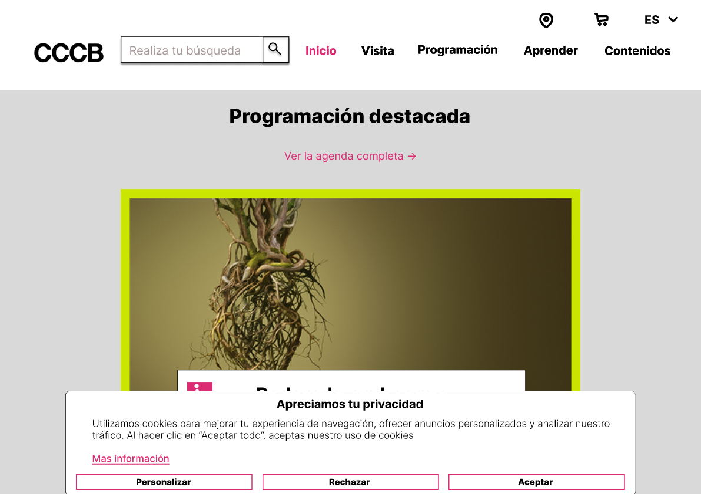
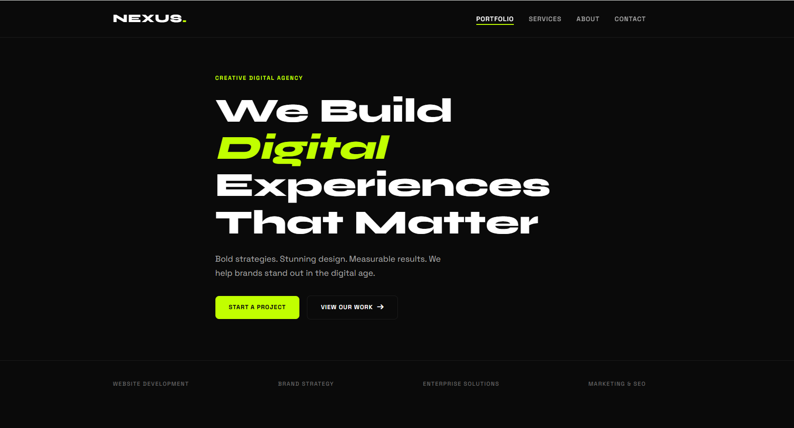
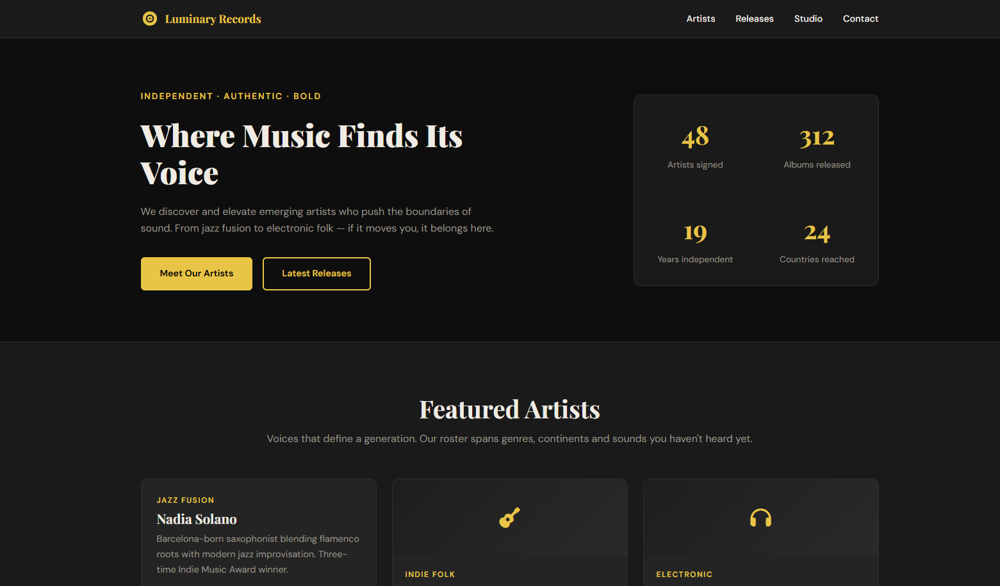

Mis proyectos universitarios
Una selección de trabajos realizados durante el Grado en Multimedia.
1er Semestre

Entre Memoria y Algoritmo
Proyecto final de la asignatura de IA Generativa para la Creación Multimedia. Un vídeo creado con inteligencia artificial que explora la frontera entre lo humano y lo digital.

Presentación — Proyecto IA Generativa
Vídeo de presentación del proyecto final de IA Generativa para la Creación Multimedia, donde se expone el proceso creativo y las herramientas utilizadas.

Mockups — Diseño de Interfaces
Prototipo interactivo diseñado en Figma para la asignatura de Diseño de Interfaces. Incluye versiones desktop y mobile con flujos de navegación completos.

Presentación de Proyecto — Diseño de Interfaces
Vídeo de presentación del proyecto de Diseño de Interfaces, incluyendo la defensa del diseño y las decisiones tomadas durante el proceso creativo.

Nexus — Digital Agency
Sitio web de una agencia digital desarrollado con HTML y CSS para la asignatura de Desarrollo Web. Diseño responsive, accesible y con atención al detalle visual.

Luminary Records
Sitio web de un sello discográfico desarrollado con HTML y CSS. Diseño moderno, responsive y con una estética visual cuidada al detalle.